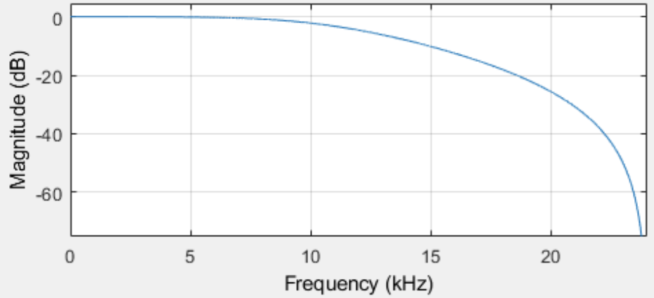

Filtering Functions in MATLAB and Python

This article describes several digital filter implementations for non-real-time applications using MATLAB and Python as processing tools for data analysis. The demos will be implementing the same filter operation on a wave file(.wav) with two different sounds inside. One sound is a low frequency gong, and the other is a high frequency bird chirp.